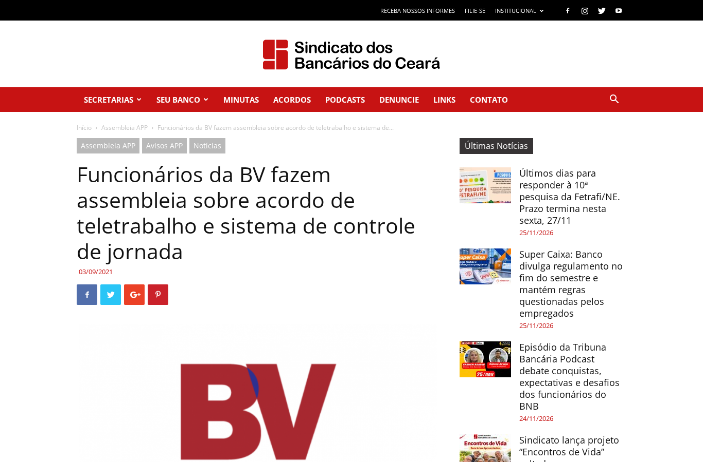
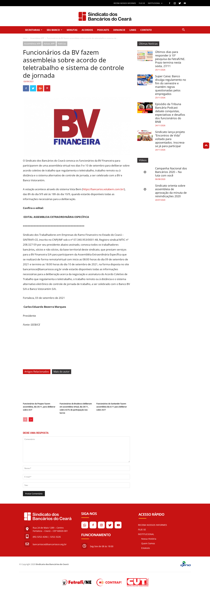

Sistema de Investigação de Marca e Identidade Online
https://www.bancariosce.org.br/funcionarios-da-bv-fazem-assembleia-sobre-acordo-de-teletrabalho-e-sistema-de-controle-de-jornada/
Prioridade: HIGH · Cenário: B_AMBIGUOUS_COMMUNICATION · Revisão humana: PENDING
A página em análise é uma publicação noticiosa e sindical do Sindicato dos Bancários do Ceará (SEEB/CE), convocando empregados da BV Financeira para deliberação sobre acordo coletivo de trabalho. O site não comercializa produtos financeiros e não atua como correspondente bancário, tratando-se de conteúdo fora do escopo de auditoria da Resolução CMN nº 4.935/2021. Portanto, classifica-se como NOT_RELEVANT com prioridade LOW. [Revisor: DOWNGRADE] O domínio pertence a uma entidade sindical (SINTRAFI-CE / SEEB/CE) divulgando convocação de assembleia de trabalhadores da BV Financeira. O uso do logotipo e da marca ocorre em contexto estritamente informativo/sindical e não comercial. A página não atua como correspondente bancário nem oferta produtos financeiros. Portanto, deve ser rebaixada para NO_INDICATION com prioridade LOW.


| Ref | Tipo | Local | Conteúdo |
|---|---|---|---|
| E-URL | domain | url | URL final: https://www.bancariosce.org.br/funcionarios-da-bv-fazem-assembleia-sobre-acordo-de-teletrabalho-e-sistema-de-controle-de-jornada/ (domínio: www.bancariosce.org.br) |
| E-DISC-001 | text | search_index | Índice de busca (lens): Funcionários da BV fazem assembleia sobre acordo de ... — Imagem visualmente semelhante ao logotipo antigo (fonte: SEEB/CE) |
| E-SHOT-VIEWPORT | screenshot | viewport | evidence/C6c0996c831/attempt-2/viewport.png (sha256 de38306b34dd78ce…) |
| E-SHOT-FULL | screenshot | page | evidence/C6c0996c831/attempt-2/fullpage.png (sha256 2da64ecfefaa7ab8…) |
| E-TITLE | title | head | Funcionários da BV fazem assembleia sobre acordo de teletrabalho e sistema de controle de jornada | Sindicato dos Bancários do Ceará - SEEB/CE |
| E-CANONICAL | meta | head | https://www.bancariosce.org.br/funcionarios-da-bv-fazem-assembleia-sobre-acordo-de-teletrabalho-e-sistema-de-controle-de-jornada/ |
| E-HEAD-1 | heading | page | Funcionários da BV fazem assembleia sobre acordo de teletrabalho e sistema de controle de jornada |
| E-HEAD-2 | heading | page | Funcionários da Poupex fazem assembleia, dia 25/11, para deliberar sobre ACT |
| E-HEAD-3 | heading | page | Funcionários do Bradesco deliberam em assembleia virtual, dia 24/11, sobre ACTs de participação nos lucros |
| E-HEAD-4 | heading | page | Funcionários do Santander fazem assembleia dia 6/11 para deliberar sobre ACT |
| E-HEAD-5 | heading | page | DEIXE UMA RESPOSTA |
| E-HEAD-6 | heading | page | Últimos dias para responder à 10ª pesquisa da Fetrafi/NE. Prazo termina nesta sexta, 27/11 |
| E-HEAD-7 | heading | page | Super Caixa: Banco divulga regulamento no fim do semestre e mantém regras questionadas pelos empregados |
| E-HEAD-8 | heading | page | Episódio da Tribuna Bancária Podcast debate conquistas, expectativas e desafios dos funcionários do BNB |
| E-HEAD-9 | heading | page | Sindicato lança projeto “Encontros de Vida” voltado para aposentados. Inscreva-se já para participar |
| E-HEAD-10 | heading | page | Campanha Nacional dos Bancários 2020 – Na luta com você |
| E-HEAD-11 | heading | page | Sindicato orienta sobre assembleia de aprovação da minuta de reivindicações 2020 |
| E-HDR | text | header | Funcionários da BV fazem assembleia sobre acordo de teletrabalho e sistema de controle de jornada 03/09/2021 |
| E-FOLD | text | viewport (acima da dobra) | SECRETARIAS Presidência Secretaria de Formação Secretaria de Esportes Secretaria de Assuntos Jurídicos Secretaria de Cultura Secretaria de Aposentados SEU BANCO Banco do Brasil Bradesco Caixa Econômica Itaú Banco do Nordeste Santander HSBC Ação de Equiparação do BNB MINUTAS ACORDOS PODCASTS DENUNCIE LINKS CONTATO RECEBA NOSSOS INFORMES FILIE-SE INSTITUCIONAL Sindicato dos Bancários do Ceará – SEEB/CE SECRETARIAS SEU BANCO MINUTAS ACORDOS PODCASTS DENUNCIE LINKS CONTATO Início Assembleia APP Funcionários da BV fazem assembleia sobre acordo de teletrabalho e sistema de... Assembleia APP Avisos APP Notícias Funcionários da BV fazem assembleia sobre acordo de teletrabalho e sistema de controle de jornada 03/09/2021 O Sindicato dos Bancários do Ceará convoca os funcionários da BV Financeira para participarem de uma assembleia virtual nos dias 9 e 10 de setembro para deliberar sobre acordo coletivo de trabalho que regulamenta o teletrabalho, trabalho remoto ou à distância e o sistema alternativo de controle de jornada, a ser celebrado com a BV e Banco Votorantim. Últimas Notícias Últimos dias para responder à 10ª pesquisa da Fetrafi/NE. Prazo termina nesta sexta, 27/11 25/11/2026 Super Caixa: Banco divulga regulamento no fim do semestre e mantém regras questionadas pelos empregados 25/11/2026 Episódio da Tribuna Bancária Podcast debate conquistas, expectativas e desafios dos funcionários do BNB 24/11/2026 Sindicato lança projeto “Encontros de Vida” voltado para aposentados. Inscreva-se já para participar |
| E-NAV | nav | header | SECRETARIAS <https://www.bancariosce.org.br/funcionarios-da-bv-fazem-assembleia-sobre-acordo-de-teletrabalho-e-sistema-de-controle-de-jornada/#> | SEU BANCO <https://www.bancariosce.org.br/funcionarios-da-bv-fazem-assembleia-sobre-acordo-de-teletrabalho-e-sistema-de-controle-de-jornada/#> | MINUTAS <https://www.bancariosce.org.br/minutas/> | ACORDOS <https://www.bancariosce.org.br/convencoes-e-acordos-coletivos/> | PODCASTS <https://www.bancariosce.org.br/tribuna-bancaria-podcast/> | DENUNCIE <https://www.bancariosce.org.br/denuncia-de-assedio-moral/> | LINKS <https://www.bancariosce.org.br/links/> | CONTATO <https://www.bancariosce.org.br/contato/> |
| E-CTA-1 | cta | page | Postar Comentário |
| E-CONTACT-1 | contact | page | Facebook <https://www.facebook.com/bancariosce> |
| E-CONTACT-2 | contact | page | Instagram <https://www.instagram.com/bancariosdoceara/> |
| E-CONTACT-3 | contact | page | Facebook <https://www.facebook.com/bancariosce> |
| E-CONTACT-4 | contact | page | Instagram <https://www.instagram.com/bancariosdoceara/> |
| E-CONTACT-5 | contact | page | <https://www.facebook.com/sharer.php?u=https%3A%2F%2Fwww.bancariosce.org.br%2Ffuncionarios-da-bv-fazem-assembleia-sobre-acordo-de-teletrabalho-e-sistema-de-controle-de-jornada%2F> |
| E-CONTACT-6 | contact | page | WhatsApp <whatsapp://send?text=Funcion%C3%A1rios%20da%20BV%20fazem%20assembleia%20sobre%20acordo%20de%20teletrabalho%20e%20sistema%20de%20controle%20de%20jornada%20%0A%0A%20https://www.bancariosce.org.br/funcionarios-da-bv-fazem-assembleia-sobre-acordo-de-teletrabalho-e-sistema-de-controle-de-jornada/> |
| E-IMG-1 | image | page (acima da dobra) | imagem alt='' src=https://www.bancariosce.org.br/wp-content/uploads/2020/09/logo-header.png (344x59, acima da dobra) |
| E-IMG-2 | image | page (acima da dobra) | imagem alt='' src=https://www.bancariosce.org.br/wp-content/uploads/2021/01/bv-financeira.png (696x387, acima da dobra) |
| E-IMG-3 | image | page | imagem alt='' src=https://www.bancariosce.org.br/wp-content/uploads/2020/09/logo-rodape.png (308x78, abaixo da dobra) |
| E-TXT-001 | text | page | SEU BANCO |
| E-TXT-002 | text | page | Banco do Brasil |
| E-TXT-003 | text | page | Banco do Nordeste |
| E-TXT-004 | text | page | SEU BANCO |
| E-TXT-005 | text | page | Início Assembleia APP Funcionários da BV fazem assembleia sobre acordo de teletrabalho e sistema de... |
| E-TXT-006 | text | page | Funcionários da BV fazem assembleia sobre acordo de teletrabalho e sistema de controle de jornada |
| E-TXT-007 | text | page | O Sindicato dos Bancários do Ceará convoca os funcionários da BV Financeira para participarem de uma assembleia virtual nos dias 9 e 10 de setembro para deliberar sobre acordo coletivo de trabalho que regulamenta o teletrabalho, trabalho remoto ou à distância e o sistema alternativo de controle de jornada, a ser celebrado com a BV e Banco Votorantim. |
| E-TXT-008 | text | page | Sindicato dos Trabalhadores em Empresas do Ramo Financeiro no Estado do Ceará – SINTRAFI-CE, inscrito no CNPJ/MF sob o nº 07.340.953/0001-48, Registro sindical MTIC nº 208.327-59 por seu presidente abaixo assinado, convoca todos os trabalhadores bancários, sócios e não sócios, da base territorial deste sindicato, que prestam serviços para a BV Financeira S/A para participarem da Assembléia |
| E-TXT-009 | text | page | teletrabalho, o trabalho remoto ou à distância e o sistema alternativo eletrônico de controle de jornada de trabalho, a ser celebrado com o Banco BV S/A e Banco Votorantim S/A. |
| E-TXT-010 | text | page | Super Caixa: Banco divulga regulamento no fim do semestre e mantém regras questionadas pelos empregados |
| E-TXT-011 | text | page | Fortaleza – Ceará – CEP 60020-001 |
| Dimensão | Sinal | Achado | Refs |
|---|---|---|---|
| DECLARED_COMMERCIAL_IDENTITY | LEGITIMATE | A entidade é claramente identificada como Sindicato dos Trabalhadores em Empresas do Ramo Financeiro no Estado do Ceará (SINTRAFI-CE / SEEB/CE), inscrita no CNPJ 07.340.953/0001-48, sem qualquer finalidade comercial ou intermediação de crédito. | E-TITLE E-TXT-008 E-SHOT-FULL |
| VISUAL_IDENTITY | NEUTRAL | A imagem da matéria jornalística utiliza a identidade visual antiga da BV Financeira (B vermelho e V azul) apenas como ilustração editorial para pauta trabalhista de assembleia. | E-IMG-2 E-SHOT-VIEWPORT E-SHOT-FULL |
| CORRESPONDENT_TRANSPARENCY | LEGITIMATE | Não aplicável; a página não atua como correspondente bancário nem oferta produtos ou serviços de crédito. | E-TXT-007 E-TXT-008 |
| LOGO_USAGE | NEUTRAL | O logotipo legado da BV Financeira é utilizado em contexto puramente informativo/editorial referente a acordo coletivo de trabalho para funcionários da instituição. | E-IMG-2 E-SHOT-FULL |
A página em análise é uma publicação noticiosa e sindical do Sindicato dos Bancários do Ceará (SEEB/CE), convocando empregados da BV Financeira para deliberação sobre acordo coletivo de trabalho. O site não comercializa produtos financeiros e não atua como correspondente bancário, tratando-se de conteúdo fora do escopo de auditoria da Resolução CMN nº 4.935/2021. Portanto, classifica-se como NOT_RELEVANT com prioridade LOW.
Empresa identificada na página sem declaração de relação de correspondente; anunciar produtos da marca não comprova vínculo.
| Tipo | Valor | Ref | Contexto |
|---|---|---|---|
| domain | bancariosce.org.br | E-URL | |
| cnpj | 07.340.953/0001-48 | E-TXT-008 | ndicato dos Trabalhadores em Empresas do Ramo Financeiro no Estado do Ceará – SINTRAFI-CE, inscrito no CNPJ/MF sob o nº 07.340.953/0001-48 |
| social_profile | https://www.facebook.com/bancariosce | E-CONTACT-1 | |
| social_profile | https://www.instagram.com/bancariosdoceara/ | E-CONTACT-2 | |
| social_profile | https://www.facebook.com/sharer.php?u=https%3A%2F%2Fwww.bancariosce.org.br%2Ffuncionarios-da-bv-fazem-assembleia-sobre-acordo-de-teletrabalho-e-sistema-de-controle-de-jornada%2F | E-CONTACT-5 | |
| institution_name_displayed | BV Financeira S/A | E-TXT-008 | |
| institution_name_displayed | Banco BV S/A | E-TXT-009 | |
| institution_name_displayed | Banco Votorantim S/A | E-TXT-009 | |
| WhatsApp <whatsapp://send?text=Funcion%C3%A1rios%20da%20BV%20fazem%20assembleia%20sobre%20acordo%20de%20teletrabalho%20e%20sistema%20de%20controle%20de%20jornada%20%0A%0A%20https://www.bancariosce.org | E-CONTACT-6 |
Mapeamento indicativo para apoio à auditoria. Não constitui conclusão regulatória; a decisão definitiva pertence à auditoria.
Fonte: NORMATIVE
Art. 14. O contrato de correspondente deve estabelecer: [...] II - vedação à utilização, pelo contratado, de logomarca ou de outros atributos que sejam similares aos adotados pela instituição contratante em suas agências, postos de atendimento, sítio eletrônico na internet, aplicativo ou outras plataformas de comunicação em rede;
Hipótese: Uso de logomarca, uso excessivo/desproporcional ou de atributos similares aos adotados pela contratante em seus canais. A norma disciplina correspondentes contratados; o responsável não foi identificado como correspondente.
Evidência observada: E-IMG-1 E-IMG-2 E-IMG-3
Informação faltante:
Fonte: NORMATIVE
Art. 14. O contrato de correspondente deve estabelecer: [...] III - divulgação ao público, pelo contratado, de sua condição de prestador de serviços à instituição contratante, identificada pelo nome com que é conhecida no mercado, com descrição dos produtos e serviços oferecidos e canais de contato da instituição contratante, inclusive de sua ouvidoria, em local visível, em destaque e em formato legível, por meio de: a) sítio eletrônico do correspondente na internet, acessível na página inicial; b) aplicativo e outras plataformas de comunicação em rede do correspondente; [...]
Hipótese: Há declaração da condição de correspondente/prestador, mas outros elementos da página (DECLARED_COMMERCIAL_IDENTITY, CONTACT_CHANNELS) podem contradizê-la ou reduzir seu efeito (destaque, legibilidade e identificação da contratante a verificar). A norma disciplina correspondentes contratados; o responsável não foi identificado como correspondente.
Evidência observada: E-CONTACT-6 E-FOLD E-HDR E-NAV E-TITLE
Informação faltante:
Fonte: NORMATIVE
Art. 3º O correspondente atua por conta e sob as diretrizes da instituição contratante, que assume inteira responsabilidade pelo atendimento prestado aos clientes e usuários por meio do contratado.
Hipótese: Atendimento ao público prestado por meio do contratado em condições que podem não seguir as diretrizes da contratante. A norma disciplina correspondentes contratados; o responsável não foi identificado como correspondente.
Evidência observada: E-CONTACT-6
Informação faltante:
Se o responsável não for correspondente contratado, os indícios podem caracterizar uso indevido de marca ou fraude, fora do escopo da Res. 4.935: avaliar encaminhamento às áreas jurídica/segurança.
Limitações: requisitos contratuais/internos não fornecidos: mapeamento limitado ao texto normativo
Decisão: DOWNGRADE → NO_INDICATION / LOW
O domínio pertence a uma entidade sindical (SINTRAFI-CE / SEEB/CE) divulgando convocação de assembleia de trabalhadores da BV Financeira. O uso do logotipo e da marca ocorre em contexto estritamente informativo/sindical e não comercial. A página não atua como correspondente bancário nem oferta produtos financeiros. Portanto, deve ser rebaixada para NO_INDICATION com prioridade LOW.
| Tema | Severidade | Questionamento | Refs |
|---|---|---|---|
| Entidade sindical e notícia editorial | HIGH | A página pertence ao Sindicato dos Bancários do Ceará (SEEB/CE) e trata de uma notícia/edital de assembleia para empregados da BV Financeira sobre acordo coletivo de teletrabalho. Não se trata de correspondente bancário, loja de veículos, empresa de energia solar ou promotora de crédito, estando fora do escopo de fiscalização da Resolução CMN 4.935/2021. | E-TITLE E-HEAD-1 E-TXT-007 E-TXT-008 E-SHOT-FULL |
| Fonte | Consulta / hipótese | URL original | Título / trecho |
|---|---|---|---|
| lens | https://logospng.org/wp-content/uploads/bv-financeira.png H12-legacy-logo:lens | https://www.bancariosce.org.br/funcionarios-da-bv-fazem-assembleia-sobre-acordo-de-teletrabalho-e-sistema-de-controle-de-jornada/ | Funcionários da BV fazem assembleia sobre acordo de ... Imagem visualmente semelhante ao logotipo antigo (fonte: SEEB/CE) |
Original: https://www.bancariosce.org.br/funcionarios-da-bv-fazem-assembleia-sobre-acordo-de-teletrabalho-e-sistema-de-controle-de-jornada/
Final: https://www.bancariosce.org.br/funcionarios-da-bv-fazem-assembleia-sobre-acordo-de-teletrabalho-e-sistema-de-controle-de-jornada/
| Artefato | Caminho | SHA-256 | Bytes |
|---|---|---|---|
| screenshot_viewport | evidence/C6c0996c831/attempt-2/viewport.png | de38306b34dd78ce122481a53740dff0172505d9e67f876236bb0aee21080a21 | 220824 |
| screenshot_full | evidence/C6c0996c831/attempt-2/fullpage.png | 2da64ecfefaa7ab8114d4079957330169b983969a0bb0654433664ffb99da791 | 472146 |
| html | evidence/C6c0996c831/attempt-2/page.html.txt | 84ac030848ded920c8d034091299d86f1ec6cec10cdfb81e3cc68fc91995777f | 139912 |
| text | evidence/C6c0996c831/attempt-2/text.txt | 20b79c2132bc22c096241574430576c2b0993c57d9004a41cec74df557d0cd77 | 3808 |
| page_data | evidence/C6c0996c831/attempt-2/page.json | 86a5467c4ae7bf23e60735a61ab9045e1569eb46ec6edda7c4ee1ced3bd1f311 | 30937 |
| Quando | De | Para | Nota |
|---|---|---|---|
| 2026-11-25T20:48:28+00:00 | DISCOVERED | QUEUED | prioritised (score 2.0) |
| 2026-11-25T20:50:27+00:00 | QUEUED | COLLECTING | |
| 2026-11-25T20:50:40+00:00 | COLLECTING | COLLECTED | |
| 2026-11-25T20:50:40+00:00 | COLLECTED | ANALYZING | |
| 2026-11-25T20:50:41+00:00 | ANALYZING | COLLECTED | prepare error, retry 1: UnboundLocalError |
| 2026-11-25T20:50:43+00:00 | COLLECTED | ANALYZING | |
| 2026-11-25T20:50:44+00:00 | ANALYZING | COLLECTED | prepare error, retry 2: UnboundLocalError |
| 2026-11-25T20:50:49+00:00 | COLLECTED | ANALYZING | |
| 2026-11-25T20:50:49+00:00 | ANALYZING | FAILED | prepare failed: UnboundLocalError: cannot access local variable 'is_disc' where it is not associated with a value |
| 2026-11-25T20:58:34+00:00 | FAILED | QUEUED | retry requested by operator |
| 2026-11-25T21:00:02+00:00 | QUEUED | COLLECTING | |
| 2026-11-25T21:00:09+00:00 | COLLECTING | COLLECTED | |
| 2026-11-25T21:00:09+00:00 | COLLECTED | ANALYZING | |
| 2026-11-25T21:00:27+00:00 | ANALYZING | REVIEWING | |
| 2026-11-25T21:00:36+00:00 | REVIEWING | COMPLETED |